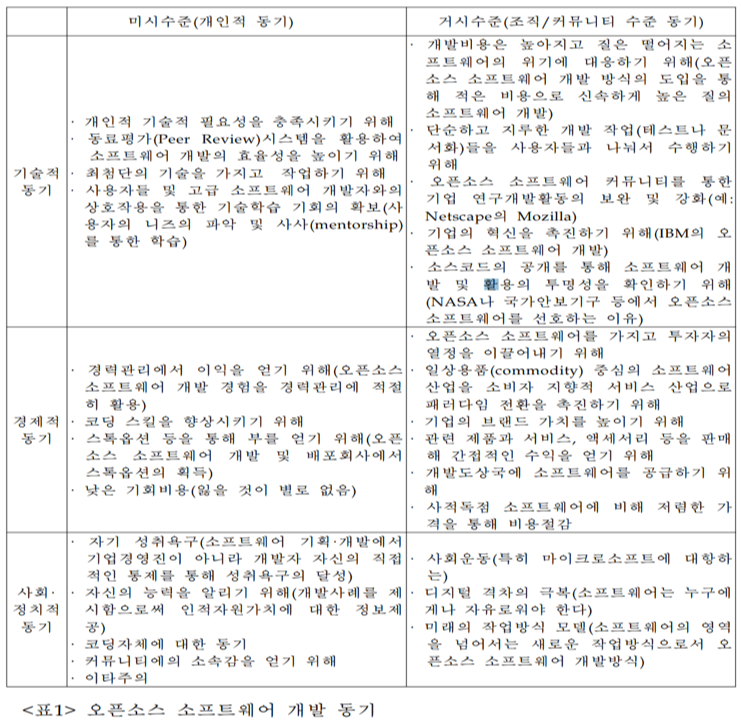

나. 오픈소스 개발 동기
오픈소스 소프트웨어 개발은 사적 자원의 투자를(개인적 시간과 노력, 기업의 투자) 통해 공공재를(오픈소스 소프트웨어) 생산해내는 독특한 특성을 지니고 있다.
‘Feller and Fitzerald(2002)’는 그 동안 오픈소스 소프트웨어의 개발 동기에 관한 연구들을 체계적으로 정리하여 동기를 기술적 동기, 경제적 동기, 사회, 정치적 동기로 구분하고 분석의 수준을 개인 수준과 조직, 커뮤니티 수준으로 분류하여 개발 동기들을 살펴보고 있다.

위의 표에서 볼 수 있듯이 개인 개발자나 민간 기업, 공동체 구성원들이 오픈소스 소프트웨어 개발에 참여하는 이유는 매우 다양하고 복합적이다. 개인 차원에서는 개인 기술적 문제 해결, 기술 학습, 명성 획득 등이 있고, 기업 차원에서는 소프트웨어 개발의 생산성 제고, 안전성의 확보, 브랜드 가치의 제고 등이 지적되고 있다.